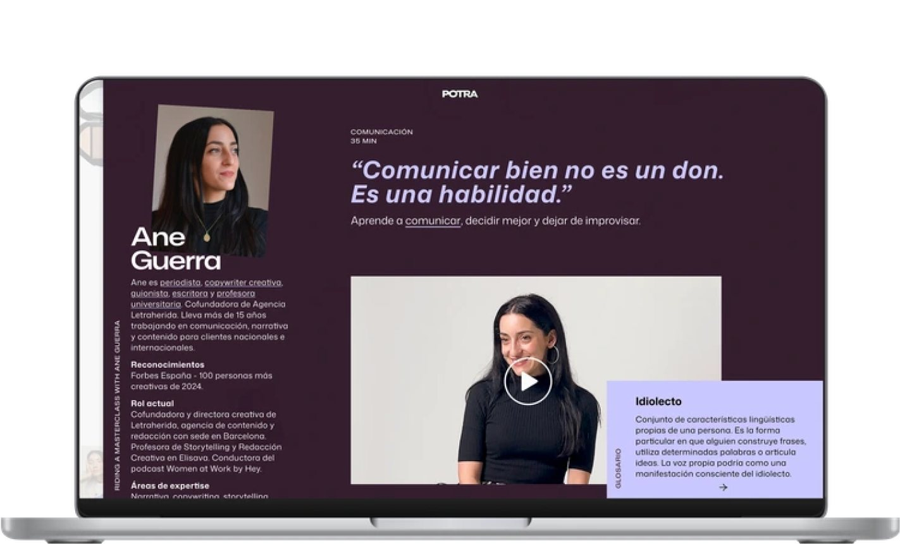
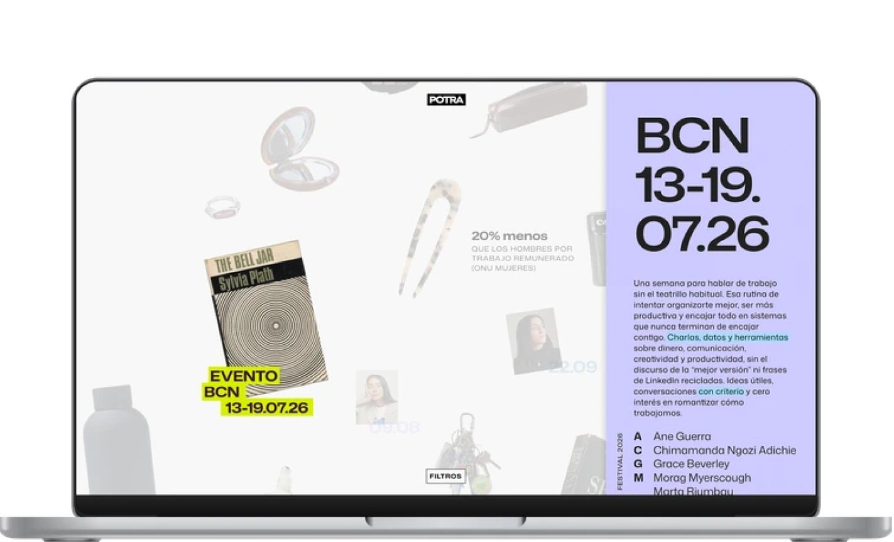
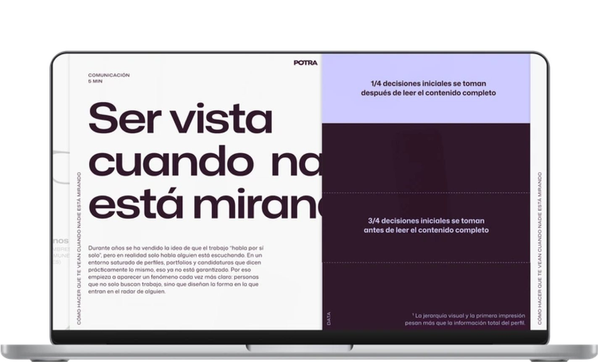
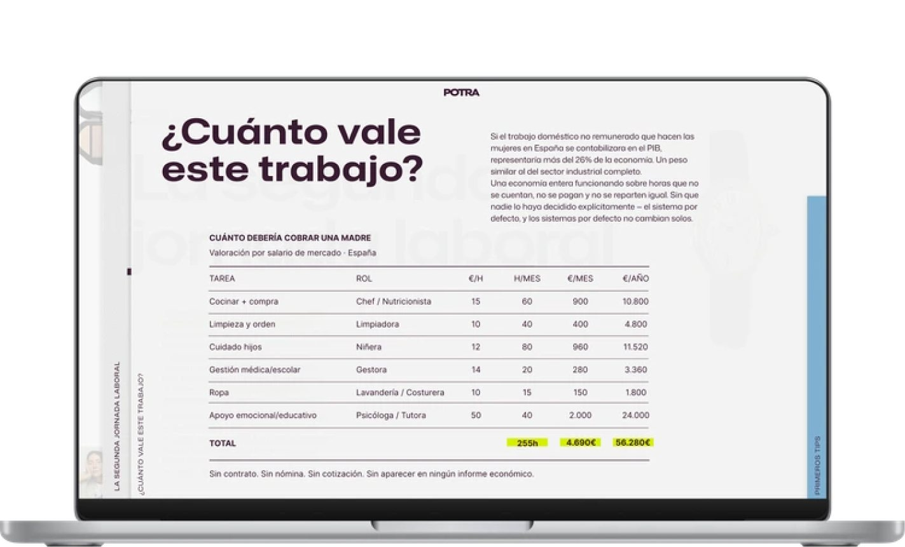
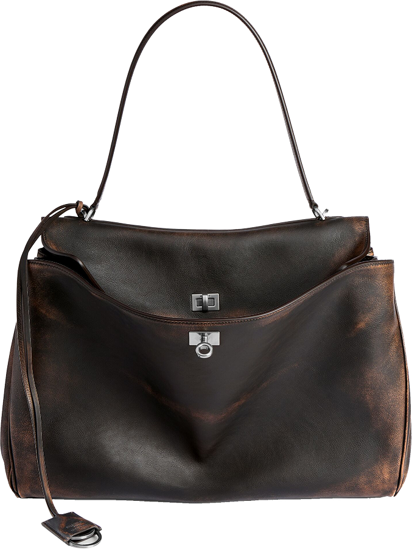
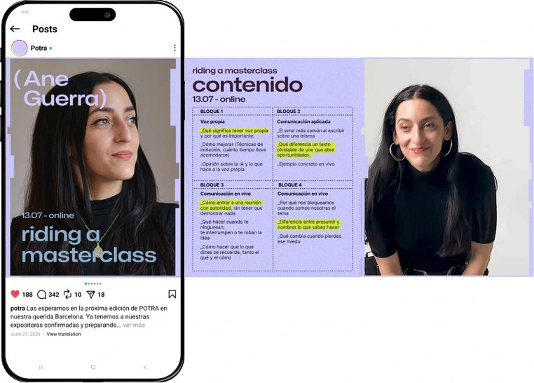
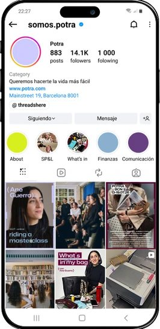
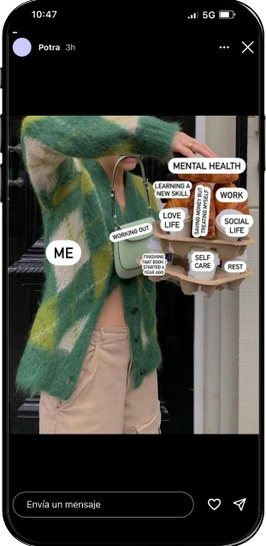

01 Intro
We’ve been sold an idea of productivity built on systems that weren’t designed with us in mind.
About
The alarm goes off. 6 a.m. This is the week you’ll finally become "that" person: wake up early, work out, meal prep, journal, optimize. At least, that’s what the TikToks you saved last night promised. Reality? It’s 8 a.m., you’re rushing out the door, and breakfast is whatever you can grab on the way.
We keep trying to fit into models that leave little room for real life: for emotions, uncertainty, care, or simply being human.
02 The platform
POTRA
Potra exists for anyone who feels they don’t quite belong in that narrative. Instead of asking you to adapt to the system, we offer tools, classes, resources, and community-driven knowledge that help you navigate professional life on your own terms.




03 The metaphor
The project begins with the metaphor of the bag we carry when we know a long day lies ahead. We leave home carrying objects that symbolize the weight of everyday life, and by grouping these items, we identified five core pillars of education:

04 Content pillars
Finances, communication, rights, creativity and biomindset: these are the topics that affect us in our professional development, and each one became a content pillar for the platform.
Finanzas
Comunicación
Derechos
Creatividad
Biomindset
05 Typeface and color
The typeface used is Mona Sans, set in its Regular weight and Expanded style for headings and highlighted content. The selected color palette is drawn from the visual universe of the objects featured throughout the project.
Type specimen
Mona Sans — titles
Mona Sans — text
Hack the Productive Sphere
Potra exists for anyone who feels they don’t quite belong in that narrative.
Mona Sans Regular · 17 / 26
Mona Sans Bold · titles
ABCDEFGHIJKLMNÑOPQRSTUVWXYZ
abcdefghijklmnñopqrstuvwxyz 0123456789
ABCDEFGHIJKLMNÑOPQRSTUVWXYZ abcdefghijklmnñopqrstuvwxyz 0123456789 & ¿? ¡! —
#8AB0CF
#680139
#341C2F
#DAEF20
#CCCAFF
06 Social media
A distinctive social media voice was developed to make complex topics feel approachable, using irony and a sharp editorial tone to inform while building a genuine connection with the audience.



07 mobile
08 Credits
- Editorial direction, art direction & design
- Antonia Ilic Bromberg, Andie Puentes Fernández
- Research & archives
- Antonia Ilic Bromberg, Andie Puentes Fernández
- Acknowledgements
- Camilo Roa (Réplica), Javier Pereda (Esiete), Albert Folch, Josep Román (Affaire), Laura Meseguer, Ane Guerra, Marc Panero